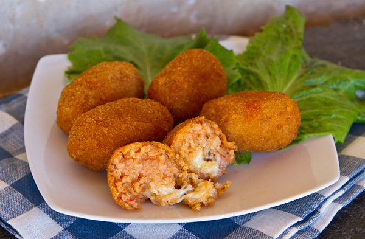
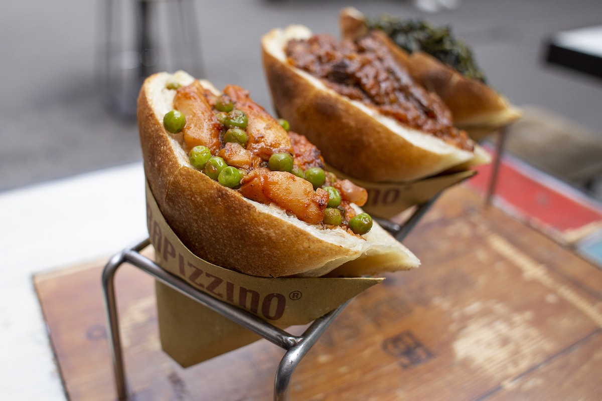
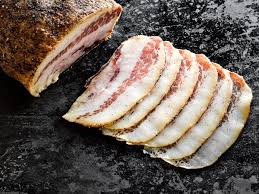
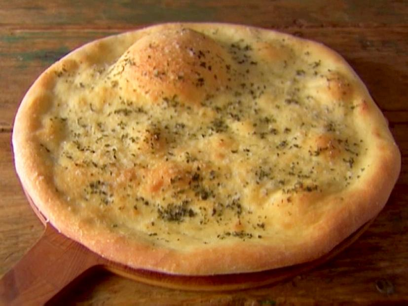
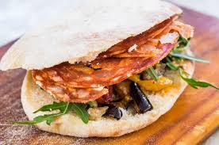
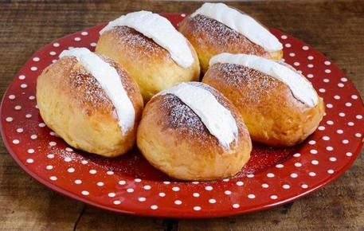
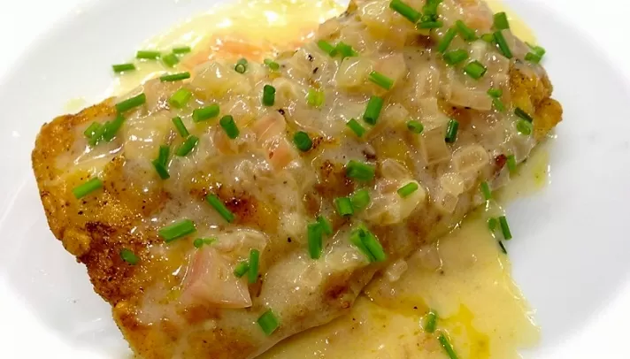

Rome is a bustling city full of people of all ethnicities. Its population as of 2019 is 4 234 019. Approximately 10% of Rome’s population is non-italian. Half of this ten percent is usually immigrants of european ethnicity, mostly from Romania, Ukraine, Poland and Albania. The other 5% is made up of immigrants from all over the world, such as Filipinos, Bangalis and Chinese.
A lot of these immigrants live in the Esquilino rione, a historical district of Rome, which is known for its variety of restaurants from all over the world. It is also known as Rome's Chinatown, even though people from over 100 countries live there. The rione is also known for its cheap hotels, shops and restaurants.
| Name | Description | Picture |
|---|---|---|
| SUPPLÌ | The classic Supplì, is a rice ball laced with ragù, and is filled with mozzarella which is deep-fried. |  |
| Trapizzino | Trapizzino is a triangular shaped wedge of white pizza which is filled with Roman food classics. |  |
| Guanciale | An Italian meat product prepared from pork cheeks. |  |
| Pizza Bianca | Is a white pizza, drizzled with olive oil, salt and no tomato sauce. It is also sometimes topped with Mozzarella or Parmesan Cheese. |  |
| Puccia | A homemade pita-like bread filled with a wide choice of toppings: zucchini, pepperoni, meat, olives, tomatoes, mozzarella, tuna. |  |
| Maritozzo | A Roman dessert made of a small loaf cut in half and stuffed with whipped cream. |  |
| Filetti di Baccala | Salt cod fillets are dipped in egg battered, fried. |  |
| Tiramisù | A coffee-flavoured dessert, made of ladyfingers dipped in coffee, layered with a mixture of eggs, sugar, mascarpone cheese and cocoa. | |